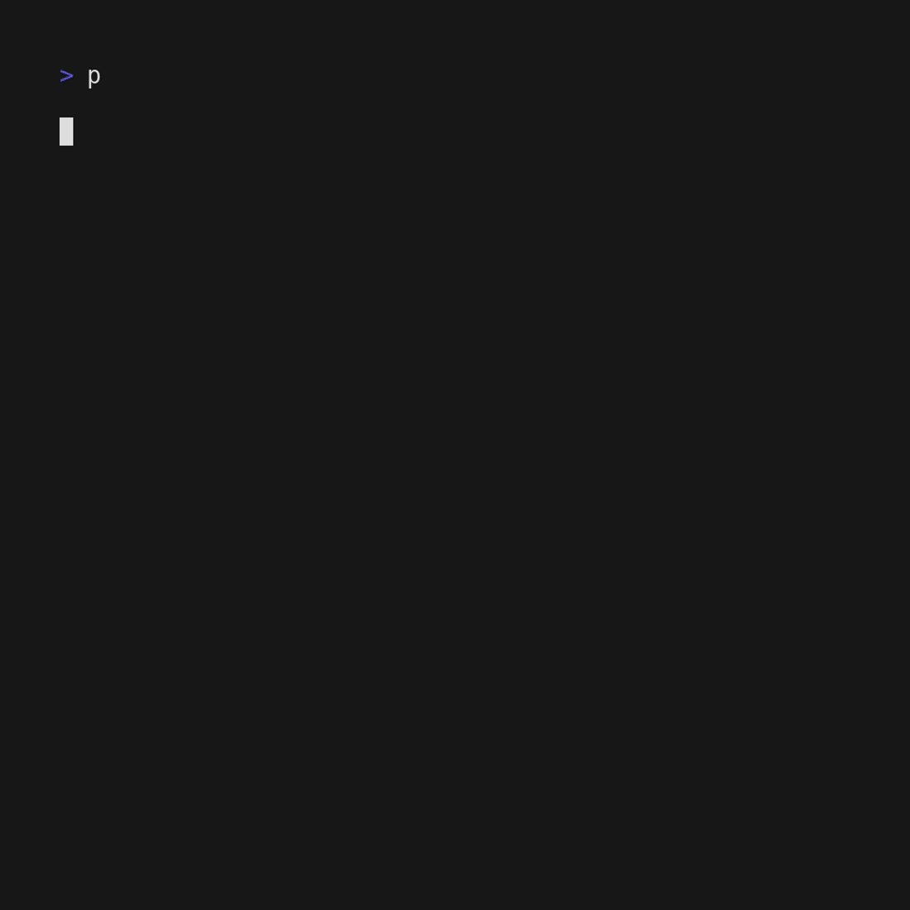

procfetch

procfetch is a command-line tool to fetch system information and display it on the screen.
It is written in <tt>C++</tt>.
Project inspiration : <tt>neofetch</tt> - a command line system information tool
Information displayed by procfetch
Static characteristics
- Host (User)
- CPU
- Kernel
- OS
- Shell
- Desktop Enviroment
- Resolution
- Theme
- Icons
- GPU (Integrated & Dedicated)
- Package count
Dynamic characteristics
- RAM
- Uptime
- Temperature
Prerequisites
for building
- GNU Make - 4.3 or later
- GCC - 11.3.0 or later
for generating API documents
- Doxygen - 1.9.1 or later
- Graphviz -2.43.0 or later
for contributing
- ClangFormat - 14.0.0 or later
for generating gif
- vhs - 0.2.0 or later
Documentation
See the documentation
Installation
Brew
$ brew tap TanmayPatil105/tap
$ brew install procfetch
Manually
$ git clone https://github.com/TanmayPatil105/procfetch.git; cd procfetch
$ ./configure
$ sudo make install
Uninstallation
$ sudo make uninstall
Usage
-vto show version$ procfetch -v-ato change color of ascii_art$ procfetch -a cyan-dto change print ascii_art of different distros$ procfetch -d Manjaro-bto display battery percentage$ procfetch -b
Customise
Add the following lines to your .bash_profile, .bashrc or .zshrc to customise procfetch
# print default ascii art of Manjaro
alias procfetch="procfetch -d Manjaro"
# print default ascii art of Kali with color cyan
alias procfetch="procfetch -d Kali -a cyan"
# print battery percentage
alias procfetch="procfetch -b"
Docker
Define environment variable PROCFETCH in the actual project home directory.
$ PROCFETCH=$HOME/procfetch
Build Docker image
$ docker build -t procfetch .
Build with Docker container
$ docker run --rm -v $PROCFETCH:/procfetch -w /procfetch procfetch make
Run with Docker container
$ docker run --rm -v $PROCFETCH:/procfetch -w /procfetch procfetch make run
Test with Docker container
$ docker run --rm -v $PROCFETCH:/procfetch -w /procfetch procfetch make check
Contributing
Make sure reading Contributing.md before Contributing